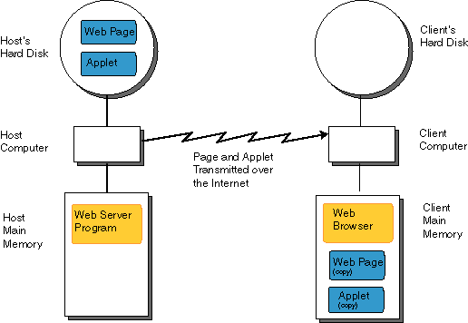

“Host” (cu traducerea în engleză “gazdă”) este un calculator conectat la o reţea,punând la dispoziţie celorlaltor calculatoare din reţea unele resurse ale sale (fişiere,aplicaţii ş.a.). În acest caz celelalte calculatoare se mai desemnează şi drept guest („oaspete”).
Host este un computer conectat la internet ce găzduiete pagini web şi furnizează vizitatorilor un server dedicat-care găzduiete un singur site web.Un server ne-dedicat găzduiete mai multe pagini web.
Serverele dedicate sunt mai rapide,dar i considerabil mai scumpe. Pe de alta parte,Client este un computer care se conectează la un server prin diverse protocoale sau aplicaţii pentru a apela la serviciile acestuia.
Un client este o unitate hardware sau software informatic (calculator sau program), care accesează un serviciu disponibil printr-un server. Serverul este adesea (dar nu mereu) un alt sistem de calculatoare, în acest caz clientul accesând serviciul prin intermediul unei reţele de calculatoare.
În ultimii ani se preferă totuşi folosirea termenilor server (în loc de host) şi client (în loc de guest).
World Wide Web (sau simplu Web ) reprezintă ansamblul documentelor de natură hypertext distribuite fie pe Internet, fie în reţelele locale. Aceste documente distribuite pe Web (numite şi pagini web) sunt scrise în limbaj HTML. Implementările Web urmează un model standard de programe client – server. Arhitectura WWW este una a clienţilor (precum Mozila Firefox, Edge, Opera etc..), care ştiu cum să prezinte datele.
HTTP - HyperText Transfer Protocol reprezintă un protocol de comunicare în reţea, special proiectat pentru Web. Acest protocol dirijează toate operaţiunile dintre browser şi serverul de Web.
Browser-ul (aplicaţia client ce folosete protocolul HTTP pentru a primi informaţii) şi serverul (aplicaţia care rulează pe computerul ce stochează informaţiile) trebuie să realizeze o conexiune la internet şi apoi să o întrerupă, pentru fiecare operaţie HTTP. De exemplu: dacă este solicitată conectarea la un site Web, browser-ul (clientul) şi serverul crează o legătură ce permite serverului să trimită clientului fiierul HTML solicitat. După ce clientul prelucrează fiierul HTML şi constată că îi mai sunt necesare şi alte fiiere, el trebuie să iniţieze o nouă conexiune la server. Fiecare operaţie HTTP este numită tranzacţie. Protocolul HTTP folosete o conexiune TCP/IP care este menţinută pe durata unei singure tranzacţii.
HTTP (Hypertext Transfer Protocol) este metoda cea mai des utilizată pentru accesarea informaţiilor păstrate pe servere World Wide Web (WWW). Protocolul HTTP este de tip text, fiind protocolul "implicit" al WWW. HTTP presupune că pe calculatorul destinaţie rulează un program care înţelege protocolul. Fişierul trimis la destinaţie poate fi un document HTML (Hyper Text Markup Language), un fiier grafic, de sunet, animaţie sau video, de asemenea un program executabil pe server-ul respectiv sau/şi un editor de text. Conform modelului TCP/IP, protocolul HTTP este de nivel aplicaţie. Realizarea şi evoluţia sa sunt coordonate de către World Wide Web Consortium (W3C).